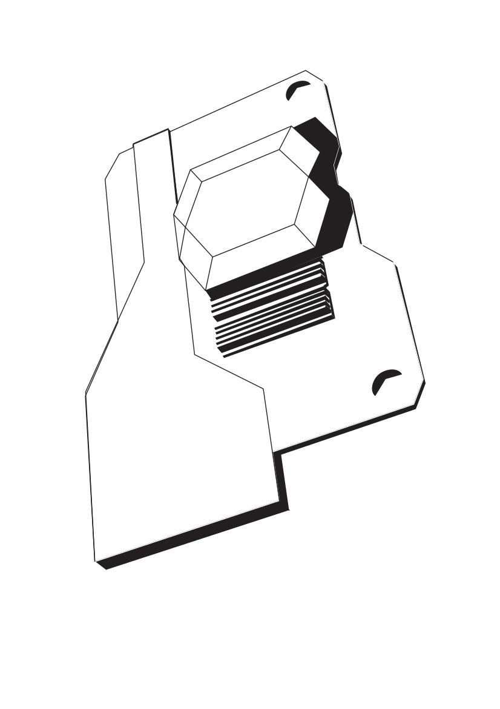
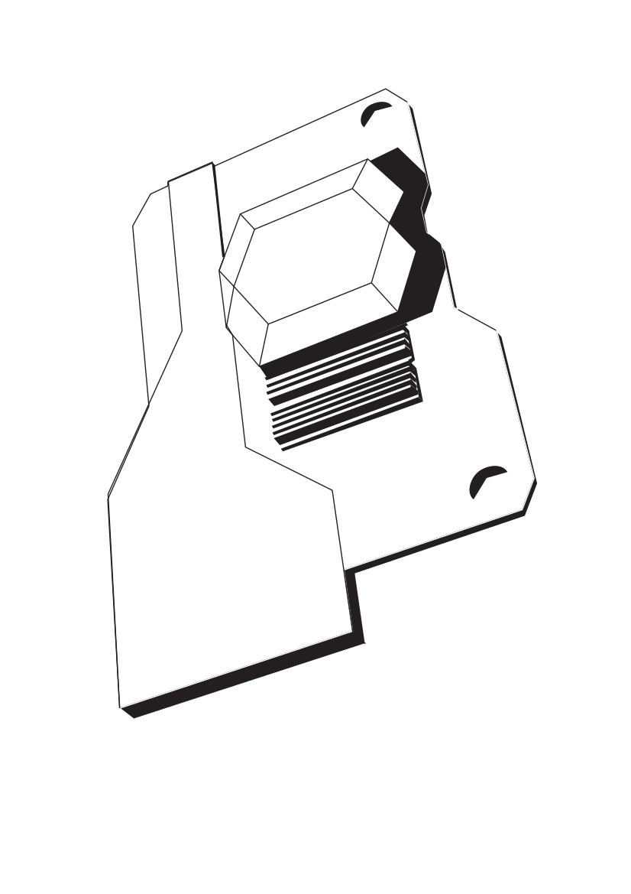

Step 1: Modeling The Car
In the beginning, this project was all about learning how to properly model vehicles.
After some trial and error, I finally landed on this Dodge Challenger Hellcat, my fourth car model.
To start i picked out a blueprint and set it up in my scene so all the orthographic
views are properly lined up.
Next I started work on a low poly version of the car. After i was done i applied subdivision and smooth modifiers.
Lastly I started working on all the car components that had to be sepparately attached,
i aslo turend the single mesh into multiple car panels to give it a more detailed and complex look
(this part also includes all details on the side of the car).
Step 2: Making the scene
After Finishing the Vehicle i wanted to create a proper scene to showcase the model. I am presonally
a huge fan of surreal scenes, especially the ones that include a mundane item. After some trial i
landed on the concept of an underwater scene with the car floating in the middle.
Step 3: Volumetrics & Lighting
Once Everything was put in place it was time to add lighting and mood to the scene,
as the scene takes place underwater it required caustics for the lighting i achieved
this by creating a transparent plane with a voronoi and displacement map on it.
For the lighting i used a spotlight with extremely high luminosity to simulate
sunlight and to create the foggy water effect i used a volumetric modifier on a texture


 
